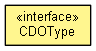

org.eclipse.emf.cdo.common.model
Interface CDOType
- public interface CDOType

Provides access to all CDO-supported data types.
- Since:
- 2.0
- No Implement
- This interface is not intended to be implemented by clients.
OBJECT
static final CDOType OBJECT
BOOLEAN
static final CDOType BOOLEAN
BOOLEAN_OBJECT
static final CDOType BOOLEAN_OBJECT
BYTE
static final CDOType BYTE
BYTE_OBJECT
static final CDOType BYTE_OBJECT
CHAR
static final CDOType CHAR
CHARACTER_OBJECT
static final CDOType CHARACTER_OBJECT
DATE
static final CDOType DATE
DOUBLE
static final CDOType DOUBLE
DOUBLE_OBJECT
static final CDOType DOUBLE_OBJECT
FLOAT
static final CDOType FLOAT
FLOAT_OBJECT
static final CDOType FLOAT_OBJECT
INT
static final CDOType INT
INTEGER_OBJECT
static final CDOType INTEGER_OBJECT
LONG
static final CDOType LONG
LONG_OBJECT
static final CDOType LONG_OBJECT
SHORT
static final CDOType SHORT
SHORT_OBJECT
static final CDOType SHORT_OBJECT
STRING
static final CDOType STRING
BYTE_ARRAY
static final CDOType BYTE_ARRAY
OBJECT_ARRAY
static final CDOType OBJECT_ARRAY
- Since:
- 3.0
MAP
static final CDOType MAP
- Since:
- 4.0
SET
static final CDOType SET
- Since:
- 4.1
LIST
static final CDOType LIST
- Since:
- 4.1
BIG_DECIMAL
static final CDOType BIG_DECIMAL
- Since:
- 2.0
BIG_INTEGER
static final CDOType BIG_INTEGER
- Since:
- 2.0
ENUM_ORDINAL
static final CDOType ENUM_ORDINAL
- Since:
- 3.0
ENUM_LITERAL
static final CDOType ENUM_LITERAL
- Since:
- 3.0
BLOB
static final CDOType BLOB
- Since:
- 4.0
CLOB
static final CDOType CLOB
- Since:
- 4.0
JAVA_CLASS
static final CDOType JAVA_CLASS
- Since:
- 4.2
JAVA_OBJECT
static final CDOType JAVA_OBJECT
- Since:
- 4.2
CUSTOM
static final CDOType CUSTOM
FEATURE_MAP_ENTRY
static final CDOType FEATURE_MAP_ENTRY
- Since:
- 2.0
getName
String getName()
getTypeID
byte getTypeID()
- Since:
- 4.0
canBeNull
boolean canBeNull()
getDefaultValue
Object getDefaultValue()
copyValue
Object copyValue(Object value)
adjustReferences
Object adjustReferences(CDOReferenceAdjuster adjuster,
Object value,
EStructuralFeature feature,
int index)
- Since:
- 4.0
readValue
Object readValue(CDODataInput in)
throws IOException
- Throws:
IOException- Since:
- 3.0
writeValue
void writeValue(CDODataOutput out,
Object value)
throws IOException
- Throws:
IOException- Since:
- 3.0
convertToEMF
Object convertToEMF(EClassifier feature,
Object value)
- Since:
- 2.0
convertToCDO
Object convertToCDO(EClassifier feature,
Object value)
- Since:
- 2.0
Copyright (c) 2011, 2012 Eike Stepper (Berlin, Germany) and others.